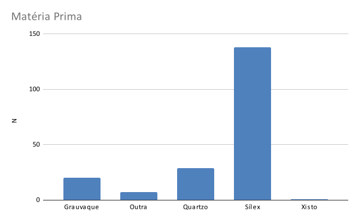
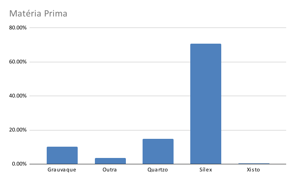

4 Organização e conteúdos das aulas
4.1 Aula 01 - O registo em Arqueologia: do físico ao digital
A primeira aula da unidade curricular é dedicada à importância do registo em Arqueologia. Foca-se sobretudo como a transição para a recolha, processamento, e análise de dados em ambiente totalmente digital agiliza o fluxo de trabalho e permite uma melhor planificação do trabalho arqueológico e reduz o potencial de erros e a perda de informação irrecuperável do registo arqueológico.
Embora a opção preferencial para o registo arqueológico seja a sua preservação in situ, a maior parte das realidades com que o arqueólogo se depara não permitem esta conservação, sendo muitos dos sítios arqueológicos destruídos, tapados ou transformados depois da intervenção. A escavação de um sítio arqueológico é, desta forma, uma experiência que não se pode voltar a repetir e, portanto, a importância do registo exato de todas as suas particularidades deve ser a principal preocupação do arqueólogo.
As abordagens atuais ao processo de registo durante a escavação arqueológica prevêem sobretudo, e de uma forma o mais lógica possível, ligar todos os elementos díspares de um sítio arqueológico no âmbito do registo espacial tridimensional. Naturalmente, a escavação arqueológica não é uma prática precisa, uma vez que existe muito espaço para ambiguidade. O processo de escavar e registar um sítio arqueológico é uma mistura curiosa entre intuição, intrepretação e rigor científico Lock (n.d.). O resultado desse processo é um arquivo composto por dados escritos, desenhados e fotografados dos objetos escavados, e da sua relação espacial. Esta preservação por registo tem como principal vanatgem o facto de que esse arquivo irá estar acessível para análise, intepretação, e futuras reinterpretações. Coletivamente, esse registo fornece o contexto dos achados feitos, ou seja, os padrões específicos de associação física que os relacionam entre si e com os sedimentos em que foram encontrados (Mitchell 2018).
No entanto, para garantir sucesso neste processo é essencial que os dados estejam estruturados e guardados de forma lógica e sem ambiguidades. O uso crescente de computadores, e particularmente de software de Sistemas de Bases de Dados tem sido fundamental para o desenvolvimento dos sistemas de registo de escavação nas últimas décadas.
Devido às particularidades dos sítios arqueológicos e as diferentes ideias e objetivos de equipas de investigação e responsáveis da investigação, conhecemos hoje um conjunto muito alargado de sistemas de registo. Ainda assim é possível reconhecer alguns conceitos-chave e requisitos-chave que integram, actualmente, a maior parte dos trabalhos de escavação. Um destes conceitos é, por exemplo, o da Matriz de Harris (Harris 1997) nomeadamente o da conceptualização do registo de contextos únicos, em que um contexto é qualquer evento natural ou antrópico que pode ser distinguido no registo arqueológico.
As primeiras abordagens ao registo de escavação consistiam em texto descritivo, notas curtas e esquemas anotados nos cadernos de campo, produzindo um tipo de registo que é díficil de armazenar e, principalmente, de analisar de forma objetiva, por ser pouco lógico na sua estrutura e não ter sentido explícito. O início da busca por cumprir com estes dois últimos requisitos foi aquando da introdução das folhas proforma de registo de campo. Ainda hoje, em várias escavações, é comum ter vários formulários de registo que representam várias classes diferentes de informação, e.g. formulários de contexto, formulários de contextos especiais, formulários individuais de achados, etc.
Contudo, aspectos como a ilegibilidade, folhas de dados incompletas e erros entre observadores são algumas das inúmeras dificuldades que os arqueólogos enfrentam quando recolhem dados no terreno utilizando abordagens puramente analógicas. Por outro lado, os arqueólogos lamentam muitas vezes as horas passadas a preencher formulários, que consomem tempo precioso que poderiam dedicar a outras tarefas.
Por estas razões, atualmente, muitos destes formulários foram subsitituídos por abordagens totalmente digitais ao trabalho de campo arqueológico. De facto, a completa digitalização de dados está a tornar-se um requisito prático para todo o trabalho de campo e de laboratório (Austin 2014; Kintigh et al. 2014; Ogburn 2010). Várias entidades de financiamento e tutelares de Património e Arqueologia, obrigam os profissionais a demonstrarem uma estratégia para o arquivo e divulgação a longo prazo de todos os dados criados durante a investigação. Em Portugal, por exemplo, a Direção Geral do Património Cultural (DGPC) exige a submissão dos dados recolhidos em todo os trabalhos de campo em suporte físico e digital, para efeitos de preservação dos dados a longo prazo.
A digitalização é frequentemente vista como proporcionadora de uma maior flexibilidade através da sua separação entre função e forma, entre conteúdo e meio, na forma como pode quebrar as fronteiras entre os dados, encoraja e apoia uma utilização dinâmica e colaborativa e proporciona mais oportunidades para a recombinação de dados e a criação de novos conjuntos de dados. Kaufmann and Jeandesboz (2017) sugerem uma série de possibilidades digitais, muitas das quais diretamente relacionadas com a nossa utilização e relação com os dados. Estas incluem a maleabilidade e flexibilidade dos dispositivos digitais, as suas capacidades de armazenamento, a sua capacidade de pesquisa, a sua conetividade, a sua computabilidade, a sua natureza interactiva e a sua criação e organização de dados. A combinação de todos estes factores, e não só, cria um ambiente indiscutivelmente atrativo para a produção, manipulação, consumo e criação de conhecimento a partir dos dados.
No trabalho arqueológico, outra das inevitabilidades para a recolha e gestão de dados de forma totalmente digital relaciona-se com os próprios instrumentos de medição que se utilizam atualmente no ca mpo e em laboratório. A adoção generalizada da Estação Total em trabalhos de escavação e prospeção Bernatchez and Marean (2011); McPherron and Dibble (2002), por exemplo, teve como consequência o armazenamento totalmente digital dos dados espaciais, seja na memória interna do equipamento, seja em computadores conectados por cabo ou por bluetooth ao equipamento topográfico (muitas vezes dando lugar ao desenvolvimento de software próprio para estabelecer essa ligação e cumprir com necessidades muito específicas em Arqueologia - ver, por exemplo, as soluções disponibilizadas em www.oldstoneage.com). Em laboratório, por outro lado, quase todos os equipamentos utilizados para leitura, registo e análise de materiais arqueológicos são, hoje em dia, completamente digitais. Até mesmo um instrumento amplamente usado para obter medições lineares de objetos - o paquímetro - tem, há vários anos, versões digitais que permitem a sua conexão a um computador, e através de um simples pressionar de botão as medidas são enviadas de forma imediata para o campo da base de dados utilizada.
4.2 Aula 02 - Dados e Bases de dados
Nesta aula são apresentados os principios básicos de uma base de dados, os tipos de bases de dados mais utilizadas, bem como os tipos de variáveis e escalas de medida. O objetivo é, para além da familiarização com os vários conceitos, demonstrar quão importantes são as decisões tomadas antes do ínicio da recolha de dados, e como essas decisões vão influenciar os tipos de análises que poderão ser posteriormente feitas.
4.2.1 Tipos de bases de dados
Uma base de dados é um simples repositório de informação relacionado com determinado assunto ou finalidade, ou seja, é uma coleção de dados ou itens de informação estruturados de determinada maneira, que permite a sua consulta, atualização, e outros tipos de operações processadas por meios informáticos. Serve para gerir vastos conjuntos de informação de modo a facilitar a organização, manutenção e pesquisa de dados. Existem vários tipos de bases de dados digitais, incluindo bases de dados relacionais, NoSQL, orientadas a objetos, multimodais, espaciais, etc. Em Arqueologia, são sobretudo utilizados três tipos principais de bases de dados: folhas de cálculo, bases de dados relacionais, e bases de dados espaciais.
4.2.1.1 Folhas de cálculo
Uma folha de cálculo é um tipo de ficheiro de armazenamento de dados no qual os dados são armazenados numa estrutura semelhante a uma tabela. É, em certo sentido, muito semelhante ao sistema de quadrícula arqueológica utilizada para identificar unidades de escavação, com linhas horizontais (normalmente identificadas com números) e colunas verticais (normalmente identificadas com letras) McPherron and Dibble (2003). A intersecção de uma linha específica com uma coluna específica é denominada de célula. Numa folha de cálculo utilizada como base de dados, cada linha representa um registo, cada coluna representa um campo e cada célula contém valores.
Em Arqueologia, as folhas de cálculo são amplamente utilizadas para recolha e análise de dados. A principal vantagem é a sua simplicidade e o facto de poderem ser lidas pela maior parte dos software mais utilizados para análises quantitativas de dados (como MS Excel, Google Sheets, R, Python, SPSS, entre outros), sistemas de gestão de bases de dados e linguagens de programação. Muitas ferramentas de manipulação de dados e bibliotecas de programação oferecem suporte integrado para a leitura e escrita destes ficheiros tornando-os uma escolha popular para o intercâmbio de dados em vários domínios.
Os formatos mais comuns e os mais aconselháveis para este tipo de base de dados são os CSV (comma-separated values) e TXT (ficheiro de texto simples). Ao contrário de outros formatos, este são completamente abertos e, por essa razão são facilmente partilhados entre utilizadores que usem diferentes programas ou sistemas operativos, e tendo em conta que não precisam de software específico podem ser abertos e modificados até mesmo com um simples editor de texto.
Contudo, à medida que os requisitos de armazenamento de dados crescem em tamanho e complexidade, as folhas de cálculo podem tornar-se menos eficientes e escaláveis em comparação com bases de dados relacionais, que oferecem capacidades mais avançadas de consulta, indexação, e gestão de dados.

4.2.1.2 Bases de dados relacionais
As bases de dados relacionais são construídas com base nos princípios do modelo relacional, que define os dados como conjuntos de tabelas. De uma forma simplista, uma base de dados relacional agrega várias folhas de cálculo ou ficheiros planos, que contém informação distinta sobre o mesmo conjunto de dados.
A estrutura de uma base de dados relacional baseia-se no conceito de chaves ou idenficadores únicos (em inglês Globally Unique Identifier, ou GUID), que desempenham um papel vital na manutenção da integridade dos dados e no estabelecimento de relações entre tabelas. A seleção de uma chave primária é essencial, pois influencia o desempenho e a eficiência das consultas e junções na base de dados. Eis algumas das principais características das chaves primárias:
Unicidade: Cada valor na coluna da chave primária deve ser único. Isto garante que não há dois registos na tabela com o mesmo identificador.
Não-nulidade: Uma chave primária não pode conter valores NULL. Cada registo na tabela tem de ter um valor de chave primária válido e não nulo.
Imutabilidade: Idealmente, os valores da chave primária não devem mudar depois de serem atribuídos a um registo. Isto assegura a consistência e evita potenciais problemas com a referenciação de dados.
Coluna única ou chave composta: Uma chave primária pode ser composta por uma única coluna ou por uma combinação de várias colunas. Neste último caso, é designada por chave composta.
Um dos exemplos práticos de uma base de dados relacional é a utilizada pelo software Newplot, um programa open source desenvolvido para gerir dados provenientes de trabalhos de escavação arqueológica. O Newplot funciona sobre uma base de dados relacional em MS Access. Esta é composta por várias tabelas, das quais as mais importantes são as Context e XYZ. A primeira contém informação sobre um determinado artefacto ou conjunto de artefactos e o contexto em que estes foram encontrados (e.g., unidade estratigráfica, tipo de material). A segunda contém informação espacial da proveniência desses artefactos, nomeadamente as coordenadas tridimensionais x, y, e z. As duas tabelas encontram-se relacionadas através de uma chave primária composta, representada pelas variáveis UNIT e ID, que correspondem, respetivamente, ao quadrado, área de escavação ou sítio arqueológico (e.g., A1, L15, Abrigo, Vale Boi), e a um número sequencial de identificação. No seu conjunto, a combinação de UNIT e ID tem de ser única. Por exemplo, em toda a base de dados, apenas um objeto pode ter como chave primária “A1-100” para que se possa relacionar as suas coordenadas na tabela XYZ com a respetiva informação contextual na tabela Context. Nalguns casos, contudo, é necessário registar várias coordenadas tridimensionais para um único objeto, que permitam recolher informação relativa à sua orientação ou ao seu tamanho e forma geral. Note-se, no entanto, que com esta abordagem estaremos a criar mais do que um registo na tabela da base de dados para cada objeto registado. A base de dados associada ao program Newplot está preparada para que um objeto tenha várias entradas na tabela XYZ, utilizando o mesmo conjunto de UNIT-ID mas adicionando uma outra variável, denominada SUFFIX. Neste caso, a relação entre as tabelas Context e XYZ é denominada de um-para-múltiplos (1:M), em que várias entradas em XYZ correspondem apenas a uma entrada de Context.
4.2.1.3 Bases de dados espaciais
As bases de dados espaciais são um tipo especializado de bases de dados concebido para armazenar, gerir e processar dados espaciais ou geográficos. Desempenham um papel vital em várias aplicações que envolvem informações baseadas na localização, como os Sistemas de Informação Geográfica (SIG), a monitorização ambiental, o planeamento urbano, a logística, serviços baseados na localização, ou em Arqueologia. Estas bases de dados estão equipadas com técnicas de indexação espacial e capacidades de consulta espacial que permitem a recuperação e análise eficientes de dados espaciais. Permitem a representação de objectos geométricos simples, como pontos, linhas e polígonos, e, em alguns casos, permitem tratar de estruturas mais complexas, como objectos 3D, e redes irregulares trianguladas (em inglês Triangulated Irregular Network - TIN).
Quase todo o trabalho de campo arqueológico produz grandes quantidades de informação baseada na localização, seja de sítios arqueológicos, ou de objetos dentro de um sítio arqueológico. A proveniência de cada fóssil, artefacto e amostra é fundamental para compreender a sua idade, tafonomia, contexto ecológico, contexto cultural e significado comportamental. Desta forma, a proveniência espacial de um item é muitas vezes tão importante como o próprio item, sendo a utilização de bases de dados espaciais em Arqueologia particularmente útil. Principalmente quando estão incluídos dados geográficos com coordenadas absolutas relativas a um datum e sistema de projeção específicos.
Um dos exemplos do uso de uma base de dados espacial para consulta online do inventário de sítios arqueológicos de Portugal Continental, é a do Geoportal da Direção Geral do Património Cultural. Esta está baseada no formato Geodatabase da ESRI. Este é um formato proprietário utilizado pelo conjunto de software ArcGIS da ESRI. Fornece um modelo de dados espaciais abrangente com vários tipos de dados, incluindo pontos, linhas, polígonos e dados raster.
Outro dos exemplos disponíveis para consulta é o do projeto Paleo Core, uma plataforma online para gestão de dados arqueológicos, paleontológicos, e geológicos, com particular ênfase nos períodos Pliocénico e Pleistocénico. Toda a base de dados deste projeto é suportado por programas de acesso aberto, incluindo a extensão PostGIS do popular sistema de bases de dados relacionais PostgreSQL. O PostGIS adiciona suporte para gerir e analisar de dados espaciais, transformando o PostgreSQL num banco de dados espacial completo, com tipos específicos de dados espaciais, índices espaciais e funções espaciais.
4.2.2 Tipos de dados
Todos os formatos de bases de dados aceitam a definição de vários tipos de dados, que devemos escolher de acordo com a informação que será colocada dentro desse campo. Destes tipos de dados devemos escolher aqueles que melhor se adaptem à informação que queremos armazenar. O tipo de dados utilizado determina a natureza dos dados que podem ser armazenados, o intervalo de valores que pode assumir e as operações que podem ser efectuadas sobre ele. Por vezes, são confundidos os tipos de daods possíveis de escolher numa base de dados com os tipos de variáveis estatísticas. Apesar de relacionados, no caso das bases de dados são tidas em consideração sobretudo as operações de armazenamento e manipulação e por isso existem mais tipos que no caso das variáveis estatísticas. Em baixo são apresentados os principais exemplos dos tipos de dados.
| Tipo de dados | Descrição |
|---|---|
Texto Texto Breve |
Valores curtos e alfanuméricos, tais como um apelido ou um endereço |
| Número, Número Grande | Valores numéricos, tais como distâncias. |
| Percentagem | Percentagens. |
| Científico | Aceita numeração científica. |
| Moeda | Valores monetários. |
| Sim/Não | Também conhecido como lógico ou boleano. Os valores Sim e Não e os campos que contêm apenas um de dois valores. |
Data/Hora Data/Hora Prolongada |
Data/Hora: valores de data e hora dos anos 100 a 9999. Data/Hora Prolongada: os valores de data e hora dos anos 1 a 9999. |
| Rich Text | Texto ou combinações de texto e números que podem ser formatados ao utilizar controlos de cor e de tipo de letra. |
| Campo Calculado | Resultados de um cálculo. O cálculo tem de fazer referência a outros campos da mesma tabela. |
| Anexo | Imagens, ficheiros de folha de cálculo, documentos, gráficos e outros tipos de ficheiros suportados anexados aos registos na base de dados, semelhante à forma de anexar ficheiros a mensagens de e-mail. |
| Hiperligação | Texto ou combinações de texto e números armazenados como texto e utilizados como um endereço de hiperligação. |
Memo Texto Longo |
Longos blocos de texto. Uma utilização típica de um campo Memo seria uma descrição detalhada do produto. |
| Pesquisa | Lista de valores que é obtida a partir de uma tabela ou consulta ou apresenta um conjunto de valores que especificou quando criou o campo. |
Aula 03 - Recolha de dados
Em geral, por vários motivos, na prática arqueológica os principais objectivos são recolher o máximo de dados necessários, o mais rapidamente possível, com o mínimo de erros possível. Nesta aula são apresentadas e postas em prática técnicas para atingir estes objectivos, nomeadamente no que diz respeito ao trabalho de laboratório e à recolha de dados a partir de artefactos arqueológicos. Algumas desta técnicas envolvem hardware especializado. Outras, tais como a criação de menus e ficheiros de ajuda que contêm listas de respostas correctas ou válidas para as variáveis seleccionadas, envolvem software que pode ser aplicado à maioria dos programas de gestão de bases de dados.
Decidir que variáveis incluir em determinada base de dados para análise de materiais arqueológicos é o primeiro passo a dar antes de iniciar a análise em si. Contudo, a escolha dessas variáveis vai depender muito do objectivo do estudo e do tipo de objectos a analisar. Mais generalizada, contudo, é a preocupação em perceber como se traduzem essas observações num conjunto de variáveis numa base de dados que (1) guarde a informação de forma eficiente, (2) torne a recuperação e análise do dados simples, (3) integre facilmente com as outras análises que eventualmente irão ser feitas no contexto do projecto arqueológico em causa.
Neste contexto, uma das primeiras preocupações será a da organização e decisão da unidade de análise. Frequentemente, cada objecto é definido como a unidade de análise, e os campos da base de dados representam as várias observações que são feitas individualmente. Num exemplo muito simples, no âmbito da análise de artefactos líticos, cada peça é considerada uma unidade de análise, registando-se variáveis como o Comprimento, a Largura, a Espessura, o Tipo de Talão, etc., para cada um dos artefactos. Nestes casos, a introdução dos dados não apresenta grandes desafios, tendo em conta que se pode fazer a análise utilizando um único ficheiro plano ou folha de cálculo.
Noutros casos, como por exemplo na análise de marcas de corte em ossos de animais, a situação é muito mais desafiante. A principal razão é porque se passa a ter duas unidades principais de análise: o osso em si (do qual se podem registar medidas, identificar a espécie, etc.), e cada uma das marcas de corte identificadas (que podem ser individualmente caracterizadas segundo as suas dimensões, perfil, etc.). Uma abordagem possível é adicionar um conjunto de variáveis para cada marca de corte na base de dados, mas isto levanta dois problemas: por um lado, nem todos os ossos terão marcas de corte e isso implica que existirão muitas células em branco; por outro lado, é impossível adivinhar o número de marcas de corte antes de se começar a análise e isso implicaria adicionar novas variáveis durante o estudo, o que deve ser sempre(!) evitado.
Assim, nestes casos a melhor estratégia será separar a análise em pelo menos duas tabelas distintas, de acordo com as duas unidades de análise definidas -uma para os ossos, outra para as marcas de corte. Naturalmente, estas duas tabelas deverão estar sempre relacionadas através de um identificador único (i.e., uma chave primária) que permite ligar os dois registos. Mais uma vez, os identificadores únicos são muito importantes, uma vez que sem essa referência não se conseguem associar os dados registados com o(s) objecto(s) analisados. Assim, é também extremamente importante manter junto do objecto analisado (através de uma etiqueta ou, quando possível, marcação directa na peça) o código do identificador único utilizado. Mesmo no caso de se tratarem de objectos de uma colecção de museu, por exemplo, em que não exista identificador único associado, deve ser criado um sistema de IDs que permita, a qualquer momento durante a análise, associar os dados recolhidos com o objecto analisado.
Uma vez decida a(s) unidade(s) de análise, pode ser criada a base dados atribuindo a cada variável que irá ser medida um nome e especificando que tipo de dados irão ser introduzidos nesse campo. Apesar de parecer frugal, a nomeação das variáveis é muito importante quando se desenha uma bases de dados de qualquer tipo. Os nomes devem não apenas ser únicos, mas devem também ser descritivos e facilmente interpretáveis. Nomes como VAR1, VAR2, VAR3, etc., não permitirão identificar facilmente que informação foi registada naquele campo. Espaços em branco, acentos, e simbolos especiais (e.g., %, $) devem também ser evitados, uma vez que alguns software têm problemas na conversão desses caracteres. Um caracter que é frequentemente usado, contudo, é o chamado underscore, sobretudo para substituir o espaço entre duas ou mais palavras (e.g., Tipo_Talao).
Como anteriormente referido, um dos mais utilizados suportes informáticos para introdução de dados em Arqueologia são as chamadas folhas de cálculo. Com os princípios definidos acima, é relativamente fácil criar um novo documento Google Sheets, inserir os nomes das variáveis na primeira linha e iniciar a análise inserindo informação sobre cada objecto em cada uma das linhas. Esta é a maneira que muitos arqueólogos usam, em todo mundo, para analisar as suas colecções. A principal razão é, claro, a simplicidade. No entanto, alguns problemas são comuns quando se usa esta opção. Um dos melhores exemplos é que quando um conjunto de variáveis não são relevantes para um objecto específico, o utilizador tem de olhar para os nomes das variáveis, saltar com o cursor todas as células que não interessam e reiniciar a análise na próxima variável que é possível registar. Não só este processo demora preciosos segundos, mas principalmente leva a que muitas vezes se preencham células erradas.
Existem actualmente opções mais práticas que permitem a introdução mais rápida e com menos erros que a tradicional folha de cálculo. Uma das soluções desenvolvidas especificamente para projectos arqueológicos é o software E5, que faz parte do ecossistema de programas criados por Shannon McPherron e Harold Dibble. É totalmente livre e pode ser descarregado em: https://github.com/surf3s/E5
O E5 é um programa generalizado de introdução de dados, que funciona com um ficheiro de configuração onde são definidos os campos de introdução de dados. A principal vantagem do E5 é que permite condicionar o preenchimento de variáveis de acordo com valores preenchidos em variáveis anteriores.
O elemento-chave do E5 é o ficheiro de configuração onde são definidos os campos de introdução de dados. Os ficheiros de configuração (que terminam com a extensão CFG) podem parecer um pouco complicados à primeira vista, e devem ser escritos num programa separado (um editor de texto como o NotePad, NotePad++, Atom ou Sublime text). No entanto, o esforço de pensar num ficheiro de configuração significa pensar na estrutura dos seus dados antes de começar a recolhê-los (ao contrário, por exemplo, de usar uma folha de cálculo), e este esforço normalmente compensa mais tarde, durante a análise dos dados.
Vários exemplos de ficheiros CFG estão incluídos no website do E5, e aqui está um exemplo de ficheiro de configuração disponibilizado na página oficial, para ilustrar algumas características:
[E5]
TABLE=lithics
[ID]
TYPE=TEXT
PROMPT=Enter the artifact ID
UNIQUE=True
[ARTIFACTTYPE]
TYPE=MENU
PROMPT=Select the artifact type
MENU=Tool,Flake,Core
[TOOLTYPE]
TYPE=MENU
PROMPT=Select the tool type
MENU=Scraper,Notch,Point,Other
CONDITION1=ArtifactType Tool
[PLATFORMTYPE]
TYPE=MENU
PROMPT=What is the platform
MENU=Plain,Cortical,Missing,Other
CONDITION1=ArtifactType Tool,Flake
[PLATFORMWIDTH]
TYPE=NUMERIC
PROMPT=Measure the platform width
CONDITION1=ArtifactType Tool,Flake
CONDITION2=PlatformType not Missing
[WEIGHT]
TYPE=NUMERIC
PROMPT=WEIGHTO ficheiro está organizado em blocos definidos por []. Cada ficheiro terá um bloco [E5] (normalmente no início) que contém definições que se aplicam a todo o ficheiro de configuração. Neste exemplo, há uma opção (TABLE=) que diz ao E5 como chamar a tabela da base de dados. Se não for especificada nenhuma tabela, o E5 utiliza ‘_default’. Como não é especificado aqui, o próprio ficheiro da base de dados (um ficheiro JSON) terá o mesmo nome que o ficheiro de configuração.
De seguida, há uma série de campos de entrada de dados (mais uma vez, cada um definido com []). Aqui o primeiro campo é um ID de artefacto. A opção TYPE indica ao E5 o tipo de dados a aceitar. As opções válidas incluem texto, nota, numérico, menus, booleano (Verdadeiro/Falso), e a data e hora. O PROMPT é especificado com uma opção e, em seguida, a opção UNIQUE indica ao E5 que cada registo de dados deve ter um valor único para este campo. As tentativas de duplicar um valor para este campo geram um aviso e, se a entrada de dados continuar, editará (ou substituirá) o registo anterior com este ID.
O campo ArtifactType demonstra a utilização de menus. Os itens de menu actuais são especificados na opção de menu e são separados por vírgulas. Não há limite para o número de itens de menu e estes são apresentados pela ordem aqui especificada (excepto se a opção SORTED estiver definida como TRUE). O campo ToolType que se segue é também um menu, mas demonstra a utilização de condicionantes. Durante a introdução de dados, o menu ToolType só é apresentado quando ArtifactType é Tool, caso contrário o E5 passa para o campo seguinte e insere uma célula vazia (““) no campo ToolType.
Do mesmo modo, PlatformType está condicionado ao facto de o ArtifactType ser Tool ou Flake. O campo que se segue, PlatformWidth, tem duas condições que têm de ser ambas verdadeiras, caso contrário o campo será ignorado e será inserido um valor vazio na tabela da base de dados. A segunda condição ilustra a utilização da palavra NOT nas condições. Quando o PlatformType é um valor diferente de Missing, esta condição é verdadeira.
Tanto o campo PlatformWidth como o último campo, Weight, são campos numéricos, o que significa que só são aceites números válidos como entrada. Todas as outras entradas geram um erro e a introdução de dados não pode continuar.
Aula 04 - Exercício prático de E5
Aula 05 - Manipulação básica de dados
Após a fase de recolha dados, seja no campo ou em laboratório, teremos idealmente uma tabela ou um conjunto de tabelas onde a informação está registada de forma organizada e legível, seguindo os princípios e boas práticas da construção de bases de dados. Assim, em principio, os dados estarão preparados para iniciar o processo de análise estatística e, se necessário, algumas operações de limpeza, transformação, e filtragem. Este processo pode ser feito, mais uma vez, em diferentes programas informáticos, dos quais se salientam dois grupos distintos: software comercial com interface de apontar e clicar com o rato (e.g., MS Excel, Google Sheets, SPSS, SAS, Stata, Minitab), e as linguagens de programação que permitem computação estatística (e.g., R, Python). O modo dominante de interacção com as ferramentas de análise de dados para muitos investigadores é com o primeiro grupo. Apesar de muito potentes, a forma de interacção com esses software é um obstáculo à reprodutibilidade, porque os gestos do rato deixam poucos vestígios que sejam duradouros e acessíveis a outros investigadores. Por outro lado, quase todos esses programas implicam a compra de uma licença, o que também dificulta a partilha de ficheiros com pessoas que não tenham acesso a uma licença do software em questão. Neste âmbito, o Google Sheets é uma das melhores opções, por se tratar de uma plataforma livre, com praticamente todas as funcionalidades do MS Excel, e com a vantagem de funcionar através de armazenamento na nuvem, facilitando a partilha de ficheiros e a colaboração em tempo real. Por estas razões, os próximos exemplos referentes à manipulação de dados serão todos realizados com recurso ao Google Sheets.
A manipulação de dados refere-se ao processo de alteração, organização, e limpeza para extrair informações e tornar os dados mais úteis para vários fins. Ainda que seja esperado que a nossa base de dados esteja o mais limpa e organizada possível, não são raras as vezes em que temos que trabalhar com ficheiros que não cumprem com as boas práticas e que necessitam, portanto, de várias operações de formatação antes de poderem ser analisados estatisticamente.
No Google Sheets, a manipulação de dados pode ser efectuada utilizando vários recursos e funções que se passam a detalhar.
4.2.3 Formatar, ordenar e filtrar
As três operações básicas de qualquer programa de folhas de cálculo são o formatar, ordenar e filtrar.
Quando se importa um ficheiro para o Google Sheets devemos não só verificar que cada coluna corresponde a uma variável que está devidamente nomeada na primeira linha da tabela e cada linha corresponde a uma entrada, mas também que o tipo de dados para cada coluna é o correto. Apesar de o programa automaticamente identificar os diferentes tipos de dados, verificar e seleccionar o formato de dados correto para cada coluna no Google Sheets é crucial para uma representação precisa dos dados e uma manipulação adequada dos mesmos. Para verificar o formato selecciona-se a coluna inteira ou o intervalo de células que se pretende, e no menu Format, em Number pode-se seleccionar o formato melhor adaptado ao tipo de dados presentes naquela coluna (e.g., Number, Plain text, Currency, Date).
A ordenação de dados nas folhas de cálculo é essencial para organizar as informações numa ordem específica com base em critérios seleccionados. Para ordenar dados, em primeiro lugar, selecciona-se o intervalo de células ou a coluna que se pretende ordenar, e no menu Data pode-se seleccionar Sort sheet A-Z para ordem ascendente ou Sort sheet Z-A para ordem decrescente. Se a variável em causa for um campo de texto, as células são organizadas alfabeticamente. Além disso, pode-se utilizar a opção Advanced range sorting option para ordenar com base em várias colunas, permitindo adaptar a ordenação às necessidades específicas.
A filtragem de dados é outra funcionalidade importante que ajuda a extrair informações relevantes de grandes conjuntos de dados. Para aplicar filtros, selecciona-se a coluna relevante, e no menu Data selecciona-se Create a filter. As opções de filtro aparecerão no nome de cada coluna, permitindo mostrar ou ocultar linhas que correspondem a critérios específicos.
4.2.4 Usar operadores e funções para manipulação de dados
Existem duas formas básicas de manipular os dados: através da utilização de operadores ou de funções. Os operadores são sinais especiais que efectuam (normalmente) alterações simples. As funções são mais parecidas com fórmulas que muitas vezes processam vários dados para obter um resultado e podem ser bastante poderosas e complexas, dependendo do software que se estiver a utilizar. Em seguida apresentam-se os vários operadores e funções de acordo com os formatos de dados anteriormente mencionados, uma vez que os operadores e as funções podem variar consoante o formato de dados. Note-se que, quando se trabalha com uma base de dados, normalmente não se alteram os valores contidos numa coluna. Em vez disso, coloca-se o resultado da sua manipulação numa nova coluna. A principal razão para não substituir ou alterar os valores de uma variável, pelo menos inicialmente, é que, se o se fizer incorrectamente, pode ser difícil ou impossível de repor os valores originais. Suponhamos que temos uma variável chamada “Cor” com os valores “Azul”, “Vermelho” ou “Amarelo”. Pretendemos alterar todos os vermelhos para azuis, mas acidentalmente alteramos todos os amarelos para azuis. Agora não temos forma de saber quais os valores azuis que têm de ser convertidos novamente em amarelos. Por isso, é sempre melhor colocar os resultados numa nova coluna, que pode ser comparada lado a lado com a coluna original. Quando estivermos convencidos de que a nova coluna contém os resultados pretendidos, podemos eliminar a coluna original e mudar o nome da nova coluna para o da coluna original.
4.2.4.1 Variáveis numéricas
Os operadores básicos que podem ser utilizados com uma variável numérica reflectem todas as várias operações aritméticas com as quais estamos familiarizados: adição (+), subtracção (-), multiplicação (*), divisão (/), elevação a uma potência (^), etc. O conceito básico é exactamente igual ao da álgebra. Por exemplo, se VAR1 e VAR2 são duas colunas que contêm valores numéricos, podemos fazer o seguinte:
VAR3 = VAR1 + VAR2 - soma os dois valores
VAR3 = VAR1 - VAR2 - subtrai o valor de VAR2 do valor de VAR1
VAR3 = VAR1 * VAR2 - multiplica os dois valores
VAR3 = VAR1 / VAR2 - divide VAR1 por VAR2
VAR3 = VAR1 ^ 2 - calcula o quadrado de VAR1No Google Sheets este tipo de operação é muito simples de efectuar. Basta na célula vazia em que queremos o resultado do cálculo introduzir o símbolo de igual (=), seguido da referência espacial da célula onde se encontra o primeiro valor, o operador matemático, e a referência espacial da célula onde se encontra o segundo valor. É importante notar que a referência espacial é dada automaticamente pelo programa assim que se selecciona uma célula. Imaginemos que, com base nos valores das variáveis Comprimento e Largura de um conjunto de sítios arqueológicos, queremos calcular a Área dos mesmos. A imagem abaixo demonstra como o fazer na folha de cálculo.

Também que podemos efectuar estas operações aritméticas não só com os valores contidos nas células, mas também com quaisquer parâmetros numéricos ou constantes. Por exemplo, para converter um valor em polegadas para centímetros, faríamos o seguinte:
Comprimento_cms = Comprimento_poleg * 2,54Estas expressões algébricas (ou fórmulas ou equações) podem ser muito complexas, como é óbvio, com a utilização combinada de vários operadores diferentes. Neste caso, é importante ter em conta que existe uma prioridade inerente a certas operações: os expoentes são calculados em primeiro lugar, seguidas da divisão e da multiplicação e, finalmente, da adição e da subtracção. Assim, na expressão:
VAR3 = 3 + 4 / 2^2o resultado é 4. Isto acontece porque a primeira operação efectuada é elevar 2 ao quadrado (resultando em 4), que é depois dividido por 4 (dando 1), que é depois adicionado a 3. É possível contornar esta ordem inerente através da utilização de parênteses, na medida em que qualquer expressão entre parênteses é calculada antes de se efectuarem outras operações. Assim, na seguinte expressão
VAR3 = ((3 + 4) / 2)^2o resultado é 12,25. A primeira operação efectuada é a adição de 3 e 4 (resultando em 7); de seguida, divide-se por 2 e eleva-se o resultado ao quadrado. Obviamente, temos de ter extremo cuidado com este tipo de operações complexas, e é sempre boa ideia verificar algumas respostas à mão para ter a certeza de que se está a obter os resultados pretendidos. Note-se também que um erro comum quando se introduzem fórmulas complexas com parênteses é omitir um dos pares de parênteses. Assim, se o computador devolver um erro, deve-se sempre verificar que para cada parêntesis aberto, existe um parêntesis fechado correspondente.
As funções são semelhantes aos operadores, mas enquanto estes combinam valores para produzir um novo valor, as funções transformam ou actuam tipicamente sobre um determinado valor. Têm também um formato diferente, com o nome da função seguido de um conjunto de parêntesis que contém o argumento numérico (ou valor) sobre o qual a função actua. Se houver mais que um argumento, estes são separados por vírgulas ou ponto e vírgula.
Nas folhas de cálculo do Google Sheets, as funções são fórmulas pré-construídas concebidas para efectuar cálculos específicos, manipulações ou tarefas de análise de dados. Estas funções são ferramentas poderosas que poupam tempo e esforço através da automatização de cálculos complexos. Seguem uma sintaxe específica que não é muito distinta da dos operadores, iniciando-se com o símbolo de igual (=), o nome da função, e entre parêntesis os valores que irão ser usados no cálculo. Algumas das funções mais comummente utilizadas com variáveis numéricas são:
SUM: Calcula a soma de um intervalo de células.
AVERAGE: Calcula a média de um intervalo de células.
COUNT: Conta o número de células com valores numéricos num intervalo.
MIN/MAX: Encontra o valor mínimo ou máximo num intervalo.
SQRT: Calcula a raíz quadrada de um valor.
INT: Arredonda um número para o número inteiro mais próximo.
ROUND: Arredonda um número para um número especificado de casas decimais.
ABS: Devolve o valor absoluto de um número.
COS: Devolve o coseno de um ângulo em radianos.
SIN: Devolve o seno de um ângulo em radianos.
ATAN: Devolve a tangente inversa de um valor, em radianos.
TEXT: Formata um número em texto.No caso das funções que calculam um novo valor com base num intervalo de células, estas podem ser usadas para fazer o cálculo ao longo de uma linha ou de uma coluna. A imagem abaixo demonstra a utilização de funções AVERAGE e SQRT para obter a média e o desvio padrão no Google Sheets:

Podemos também combinar funções numa expressão tal como combinámos operadores anteriormente. Por exemplo, se quisermos obter a raiz quadrada da diferença de dois números. Por vezes, a diferença entre dois números é negativa, e a maioria dos sistemas informáticos não permite que se tire a raiz quadrada de um número negativo. Para evitar esta possibilidade, pode-se obter o valor absoluto (i.e., o valor positivo) da diferença antes de obter a raiz quadrada:
VAR3 = SQRT(ABS(VAR2-VAR1))4.2.4.2 Variáveis de texto
Tipicamente, apenas um operador está disponível para trabalhar com texto, o operador de concatenação (+ ou &). A concatenação combina dois valores de caracteres juntando simplesmente um ao outro. Por exemplo, “Paleolítico” & “Médio” resulta em “PaleolíticoMédio”. Se quisermos formatar a expressão com um espaço no meio, podemos fazer o seguinte:
"Paleolítico" & " " & "Médio"o que resulta em “Paleolítico Médio”.
Em contrapartida, existem muitas funções úteis para texto. As mais comuns são as seguintes:
LEN: Devolve o comprimento de uma cadeia de texto (número de caracteres).
LEFT: Extrai um número especificado de caracteres do início de uma cadeia de texto.
RIGHT: Extrai um número especificado de caracteres do fim de uma cadeia de texto.
MID: Extrai um número específico de caracteres de uma cadeia de texto, começando numa posição especificada.
UPPER: Converte todos os caracteres de uma cadeia de texto em maiúsculas.
TRIM: Remove quaisquer espaços à esquerda ou à direita de uma cadeia de texto.
PROPER: Converte a primeira letra de cada palavra numa cadeia de texto para maiúsculas.
SUBSTITUTE: Substitui as ocorrências de um texto específico numa cadeia de texto por outro texto.Também com estas funções é possível combinar duas ou mais funções para alterar ou criar um novo valor. O exemplo abaixo demonstra como podemos extrair um conjunto de caracteres de uma célula e transformá-los em maiúsculas através da combinação das funções LEFT e UPPER do Google Sheets:

4.2.4.3 Funções de lógica e de pesquisa
Finalmente, ficam a faltar um conjunto de funções que se podem aplicar à maior parte do tipo de dados e que, apesar de serem mais complexas no seu funcionamento, são de grande relevância.
Com as funções de pesquisa, podem-se obter dados com base em critérios específicos. Duas das mais utilizadas são as funções VLOOKUP e HLOOKUP. A função VLOOKUP procura um valor na coluna mais à esquerda de um intervalo especificado e retorna um valor correspondente de uma coluna diferente na mesma linha. É normalmente utilizada para efetuar pesquisas verticais e em grandes conjuntos de dados. A função HLOOKUP funciona de forma semelhante à VLOOKUP, mas pesquisa horizontalmente na primeira linha de um intervalo especificado e devolve um valor correspondente de uma linha diferente. O exemplo abaixo demonstra como utilizar a função VLOOKUP para procurar o tipo de sítio arqueológico com base no ID atribuído. Esta função é extremamente útil, por exemplo, quando queremos juntar dados de duas tabelas com uma chave primária comum.

As funções de lógica permitem tomar decisões com base em condições, permitindo um processamento de dados mais avançado. Uma das mais úteis é a função IF. Esta avalia uma condição e devolve valores diferentes com base no facto de a condição ser verdadeira ou falsa. Tem três argumentos necessários para o seu funcionamento correto:
=IF(expressão_lógica, [valor_se_verdadeiro], [valor_se_falso])No exemplo abaixo, usa-se a função IF para, com base nos valores de comprimento e largura de utensílios líticos preencher uma nova coluna com o tipo de suporte. A ideia é que se for verdade que o comprimento é superior ou igual a duas vezes a largura, a célula será preenchida com a opção “Alongado”, se, pelo contrário a expressão lógica não se verificar, então a célula será preenchida com a opção “Lasca”.

Aula 06 - Exercício prático de manipulação de dados
Aula 07 - Estatística descritiva
4.2.5 Tipos de variáveis estatísticas
Como anteriormente ficou patente, os dados arqueológicos apresentam-se sob várias formas quando registados numa base de dados. Em linguagem de base de dados, a divisão dos vários tipos está sobretudo relacionada com a forma como a informação será guardada. No entanto, no momento de analisar essas mesmas variáveis através de métodos aritméticos e estatísticos, a sua classificação obedece a princípios ligeiramente diferentes. Assim, de um ponto de vista estatístico podemos classificar os dados como:
Dados qualitativos (ou não numéricos, ou categóricos). Os dados qualitativos captam informação categórica sem valores numéricos. Estes dados são frequentemente expressos através de etiquetas, códigos ou categorias. Exemplos incluem tipos de artefactos, práticas de enterramento, tipos de povoamento e estilos de cerâmica. Os dados qualitativos podem ainda ser classificados com base nas suas características:
Dados nominais. Os dados nominais representam categorias distintas sem qualquer ordem ou classificação inerente. Os exemplos incluem tipos de artefactos (e.g., estilos de cerâmica, tipos de ferramentas líticas), classificações de sítios (e.g., gruta, abrigo, cidade) e categorizações de género (e.g., masculino, feminino).
Dados ordinais. Na escala ordinal, os dados têm uma ordem inerente, mas os intervalos entre os valores não são uniformes. Exemplos incluem a classificação de bens funerários (e.g., estatuto alto, médio, baixo), camadas estratigráficas (e.g., superior, médio, inferior) e níveis de hierarquia social.
Dados quantitativos (ou numéricos). Os dados quantitativos envolvem valores numéricos e podem ser medidos utilizando unidades padronizadas. Estes dados permitem uma análise matemática e uma comparação precisa. Os exemplos incluem contagens de artefactos, medidas (comprimento, peso, etc.) e coordenadas de sítios arqueológicos. Os dados quantitativos podem ainda ser classificados com base nas suas características:
Dados contínuos. Os dados contínuos são medidas que podem assumir qualquer valor dentro de um determinado intervalo. Estes valores são frequentemente representados numa escala contínua. Exemplos em arqueologia incluem pesos de artefactos, profundidades de camadas arqueológicas e distâncias entre sítios.
Dados discretos. Os dados discretos são valores contados que são distintos e separados. Surgem frequentemente da contagem de ocorrências ou da enumeração de objectos. Exemplos incluem contagens de artefactos, o número de enterramentos num sítio e o número de tipos específicos de artefactos.
Por outro lado, as variáveis podem ser organizadas segundo a escala de medida. Esta refere-se à natureza e às características dos dados que ditam as operações matemáticas que podem ser efectuadas sobre eles. Existem quatro escalas de medida principais:
Escala Nominal. Os dados na escala nominal são categóricos e não têm qualquer ordem ou classificação inerente. Exemplos incluem género, grupo étnico e tipos de artefactos. Os dados nominais permitem o agrupamento e a classificação, mas as operações matemáticas, como a adição ou a multiplicação, não são significativas.
Escala ordinal. Os dados ordinais apresentam uma ordem ou classificação inerente entre categorias, mas os intervalos entre categorias não são uniformes. Os exemplos incluem respostas a inquéritos (por exemplo, concordo totalmente, concordo, neutro, discordo, discordo totalmente) e camadas estratigráficas. Embora os dados ordinais permitam comparações relativas, não é possível efetuar medições precisas devido aos intervalos irregulares.
Escala intervalar. Os dados de escala intervalar possuem intervalos consistentes entre valores, mas não têm um verdadeiro ponto zero. A temperatura medida em Celsius ou Fahrenheit serve de exemplo. Em arqueologia, as escalas de intervalo podem ser aplicadas para representar sequências cronológicas de estilos de artefactos ou a distribuição de percentagens de composição de artefactos.
Escala de razão. Os dados da escala de razão não só têm intervalos uniformes como também apresentam um verdadeiro ponto zero. Os exemplos incluem contagens de artefactos, pesos de artefactos, ou distâncias entre sítios arqueológicos. As escalas de proporção permitem proporções significativas e várias operações matemáticas, como a adição, a subtração, a multiplicação e a divisão.
O tipo de dados corresponde directamente à escala de medida. Por exemplo, os dados qualitativos alinham-se frequentemente com escalas nominais ou ordinais, enquanto que os dados quantitativos alinham-se tipicamente com escalas de intervalos ou rácios.
4.2.6 Análise univariada
Uma vez elaborada uma tabela ou tabelas de dados, toda a informação está lá, mas os padrões que caracterização aquele conjunto ainda não são totalmente claros para nós. Normalmente, não estamos interessados nas características de cada peça individual, mas no conjunto do material como um todo. Quando fazemos perguntas como “Quão comuns são os diferentes tipos de matérias primas numa colecção de artefactos líticos?” “As lascas dessa colecção têm um tamanho normalizado?”, as respostas não estão imediatamente disponíveis na base de dados. Precisamos de resumir os nossos dados (os valores das nossas variáveis) de alguma forma, seja através de tabelas, gráficos ou de números que resumem a tendência, tendo sempre em consideração as características de medição das nossas variáveis.
4.2.6.1 Variáveis qualitativas
4.2.6.1.1 Tabelas de frequência
As tabelas de frequência são um óptimo ponto de partida para resumir dados. Estas podem ser utilizadas para mostrar dados quantitativos mas sobretudo qualitativos, e mostram a frequência com que cada valor ocorre no conjunto.
A apresentação de dados qualitativos numa tabela de frequências é bastante simples, uma vez que já existem categorias claramente definidas. Por exemplo, se quisermos mostrar qual a frequência das várias matérias primas numa colecção de ferramentas em pedra, podemos muito facilmente criar uma tabela como a abaixo apresentada.
| Matéria Prima | Frequência absoluta (ou N) |
|---|---|
| Grauvaque | 20 |
| Outra | 7 |
| Quartzo | 29 |
| Sílex | 138 |
| Xisto | 1 |
| Total | 195 |
Este tipo de frequência denomina-se de frequência absoluta, uma vez que representa o número real de itens analisados para cada categoria. Representa a contagem em bruto sem qualquer consideração pela dimensão global do conjunto de dados ou pelo contexto.
As frequências relativas, por outro lado, têm em conta a proporção ou percentagem de ocorrências de um atributo específico em relação ao número total de ocorrências ou a um subconjunto específico de ocorrências. Proporcionam uma perspectiva sobre a importância de um atributo no contexto de todo o conjunto de dados. Para calcular a frequência relativa, divide-se a frequência absoluta de um atributo específico pelo número total de ocorrências no conjunto de dados ou subconjunto. Isto permite-lhe comparar a importância de diferentes atributos em diferentes conjuntos, mesmo que os tamanhos dos conjuntos de dados não sejam os mesmos. As frequências relativas podem ser escritas como fracções, percentagens ou números decimais.
| Matéria Prima | Frequência absoluta (ou N) | Frequência relativa |
|---|---|---|
| Grauvaque | 20 | 10.26% |
| Outra | 7 | 3.59% |
| Quartzo | 29 | 14.87% |
| Sílex | 138 | 70.77% |
| Xisto | 1 | 0.51% |
| Total | 195 | 100.00% |
Finalmente, existe ainda um terceiro tipo de frequências que é comummente utilizado em Arqueologia, que são as frequências relativas acumuladas. Trata-se da acumulação das frequências relativas anteriores. Para encontrar as frequências relativas acumuladas, adicione todas as frequências relativas anteriores à frequência relativa da linha atual, como mostra o exemplo abaixo.
| Matéria Prima | Frequência absoluta (ou N) | Frequência relativa | Frequência relativa acumulada |
|---|---|---|---|
| Grauvaque | 20 | 10.26% | 10.26% |
| Outra | 7 | 3.59% | 13.85% |
| Quartzo | 29 | 14.87% | 28.72% |
| Sílex | 138 | 70.77% | 99.49% |
| Xisto | 1 | 0.51% | 100.00% |
| Total | 195 | 100.00% |
A criação deste e outros tipos de tabelas no Google Sheets é relativamente simples, graças à ferramenta de tabelas dinâmicas, ou Pivot Tables. As tabelas dinâmicas fornecem uma forma de resumir os dados na folha de cálculo, agregando, ordenando, contando ou calculando automaticamente a média dos dados enquanto apresenta os resultados resumidos numa nova tabela. Uma tabela dinâmica funciona como uma espécie de consulta a uma base de dados.
As tabelas dinâmicas são compostas por colunas, linhas, páginas e campos de dados que podem ser deslocados, ajudando-o a isolar, agrupar, expandir e somar os seus dados em tempo real.
As tabelas são uma boa forma de organizar e apresentar dados. Mas os gráficos podem ser ainda mais úteis para compreender os dados. Não existem regras rígidas relativamente aos gráficos a utilizar. Dois gráficos que são utilizados para apresentar dados qualitativos são os gráficos circulares e os gráficos de barras.
4.2.6.1.2 Gráficos circulares
Num gráfico circular, as categorias de dados são representadas por cunhas num círculo e são proporcionais em tamanho à percentagem (frequência relativa) de indivíduos em cada categoria. Utilizando o exemplo dado nas tabelas anteriores, a figura abaixo representa os mesmos dados através de um gráfico circular.

4.2.6.1.3 Gráficos de barras
Os gráficos de barras são compostos por barras separadas umas das outras. O comprimento da barra para cada categoria é proporcional ao número ou percentagem de indivíduos em cada categoria. As barras podem ser rectângulos ou caixas rectangulares (utilizadas em gráficos tridimensionais), e podem ser verticais ou horizontais. O gráfico de barras apresentado na figura abaixo tem os grupos etários representados no eixo dos X e as proporções no eixo dos Y.


4.2.7 Medidas de tendência central
As medidas de tendência central usam um único valor representativo num conjunto de dados que indique o seu centro. Estas medidas fornecem um resumo conciso da distribuição e destacam o valor típico que reflecte a essência dos dados. Em Arqueologia, as medidas de tendência central ajudam-nos a discernir padrões, a fazer comparações e a tirar conclusões sobre um conjunto de dados.
Três medidas de tendência central são principalmente utilizadas:
Média. A média é calculada somando todos os valores num conjunto de dados e dividindo pelo número de observações. Representa o ponto de equilíbrio da distribuição dos dados. A média é especialmente útil quando os dados seguem uma distribuição normal (ou simétrica), uma vez que é sensível a valores extremos. Esta estatística só tem significado para variáveis de tipo quantitativo. Para calcular a média, somam-se todos os valores e dividi-se pelo número de observações. A fórmula é a seguinte:
Média = Soma dos valores / Número de observaçõesMediana. A mediana é o valor intermédio num conjunto de dados quando este é organizado por ordem ascendente ou descendente. É menos afetada por valores extremos e fornece uma estimativa robusta da tendência central. Para calcular a mediana, organizam-se os dados em ordem crescente e encontra-se o valor localizado a meio da distribuição, para 50% das observações sejam superiores ou iguais à medias e 50% sejam inferiores ou iguais à mediana. Se o conjunto de dados tiver um número par de observações, a mediana é a média dos dois valores intermédios. A mediana não é influenciada por valores extremos e o seu cálculo exige que as variáveis sejam medidas numa escala pelo menos ordinal.
Moda. A moda representa o valor que aparece mais frequentemente num conjunto de dados. É particularmente útil para identificar o atributo mais comum num conjunto de dados. A moda pode destacar tipos de artefactos dominantes, práticas de enterramento e padrões recorrentes na cultura material. Um conjunto de dados pode ter uma moda (unimodal), várias modas (multimodal) ou ser amodal (sem valores repetidos). Esta estatística só tem significado para variáveis discretas.
4.2.8 Medidas de dispersão
Enquanto as medidas de tendência central iluminam o valor médio ou típico num conjunto de dados, as medidas de dispersão destacam o grau de dispersão ou variabilidade em torno desse valor central. Os conjuntos de dados arqueológicos contêm frequentemente diversos atributos e artefactos, e compreender a sua variabilidade é essencial para tirar conclusões significativas sobre esses mesmos conjuntos.
Três medidas primárias de dispersão são normalmente utilizadas em Arqueologia:
Intervalo. O intervalo de variação é a medida de dispersão mais simples. Calcula a diferença entre os valores máximo e mínimo num conjunto de dados. Embora forneça uma estimativa aproximada da variabilidade, pode ser sensível a valores extremos e pode não refletir toda a distribuição. Para calcular o intervalo, subtrai-se o valor mínimo do valor máximo no conjunto de dados.
Variância. A variância quantifica a diferença média ao quadrado entre cada ponto de dados e a média. Ela mede o quanto os valores individuais se desviam da média, fornecendo uma compreensão mais abrangente da dispersão. No entanto, a variância é apresentada em unidades quadradas, o que pode não ser tão intuitivo. Para calcular a variância, encontra-se a média do conjunto de dados e, em seguida, calcula-se a diferença ao quadrado entre cada ponto de dados e a média. Soma-se as diferenças ao quadrado e divide-se pelo número de observações.
Desvio padrão O desvio padrão é a raiz quadrada da variância. Expressa a dispersão nas mesmas unidades que os dados originais, tornando-a mais interpretável. O desvio padrão oferece uma representação equilibrada da variabilidade e é frequentemente preferido devido à sua facilidade de compreensão. Para calcular o desvio padrão, calcula-se a raiz quadrada da variância.